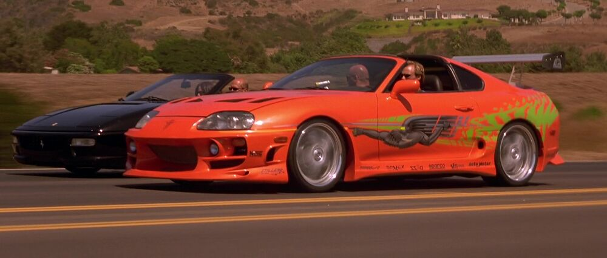

On this page you can find technical specifications of cars
The Toyota Supra (Japanese: トヨタ・スープラ, Hepburn: Toyota Sūpura) is a sports car and grand tourer manufactured by Toyota Motor Corporation beginning in 1978. The name "supra" is derived from the Latin prefix, meaning "above", "to surpass" or "go beyond". The initial four generations of the Supra were produced from 1978 to 2002. The fifth generation has been produced since March 2019 and went on sale in May 2019.[4] The styling of the original Supra was derived from the Toyota Celica, but it was both longer and wider. Starting in mid-1986, the A70 Supra became a separate model from the Celica. In turn, Toyota also stopped using the prefix Celica and named the car Supra. Owing to the similarity and past of the Celica's name, it is frequently mistaken for the Supra, and vice versa. The first, second and third generations of the Supra were assembled at the Tahara plant in Tahara, Aichi, while the fourth generation was assembled at the Motomachi plant in Toyota City. The fifth generation of the Supra is assembled alongside the G29 BMW Z4 in Graz, Austria by Magna Steyr.
| 1994 Toyota Supra | |
|---|---|
|  | |
| Overview | |
| Manufacture | Toyota |
| Model | Toyota Supra MK IV |
| Production Year | 1994 |
| Body and chassis | |
| Engine | 2JZ-GTE l6 |
| Model | "The Fast and the Furious" |
| Wiki | |
The Dodge Charger is a model of automobile marketed by Dodge in various forms over seven generations since 1966. The first Charger was a show car in 1964. A 1965 Charger II concept car had a remarkable resemblance to the 1966 production version. The Charger has been built on three different platforms in various sizes. In the United States, the Charger nameplate has been used on subcompact hatchbacks, full-size sedans, muscle cars, and personal luxury coupes. The current version is a four-door sedan. The 1966 Charger was an effort by Dodge to produce an upscale, upsized pony car. American Motors had already built a very similar vehicle in 1965, the Marlin, which was positioned as a personal car, an emerging market niche. Mercury was more successful in its execution in introducing the upscale Cougar, which was both considerably larger and more refined than the Ford Mustang that pioneered the pony car concept in 1964 - yet still had badly compromised rear seating. The Charger was intended to up the ante to an even more expensive and luxurious coupe that featured all-bucket seating for four.
| 1970 Dodge Charger | |
|---|---|

|
|
| Overview | |
| Manufacture | Chrysler |
| Model | Dodge Charger R/T |
| Production Year | 1970 |
| Body and chassis | |
| Engine | 2JRI424 |
| Film(s) | "The Fast and the Furious" |
| Wiki | |
The first-generation Ford Mustang was manufactured by Ford from March 1964 until 1973. The introduction of the Mustang created a new class of automobile known as the pony car. The Mustang’s styling, with its long hood and short deck, proved wildly popular and inspired a host of competition. It was initially introduced on April 17, 1964, as a hardtop and convertible with the fastback version put on sale in August 1964. At the time of its introduction, the Mustang, sharing its platform with the Falcon, was slotted into a compact car segment. With each revision, the Mustang saw an increase in overall dimensions and in engine power. The 1971 model saw a drastic redesign to its predecessors. After an initial surge, sales were steadily declining, as Ford began working on a new generation Mustang. With the onset of the 1973 oil crisis, Ford was prepared, having already designed the smaller Mustang II for the 1974 model year. This new car had no common components with preceding models.
| 1967 Ford Mustang | |
|---|---|

|
|
| Overview | |
| Manufacture | Ford |
| Model | Mustang |
| Production Year | 1967 |
| Body and chassis | |
| Engine | 2JRI424 |
| Film(s) | "Gone in 60 Seconds" |
| Wiki | |
The Aston Martin DB5 is a British luxury grand tourer (GT) that was made by Aston Martin and designed by the Italian coachbuilder Carrozzeria Touring Superleggera. Released in 1963, it was an evolution of the final series of DB4. Although not the first in the DB series, the DB5 is the best-known cinematic James Bond car, first appearing in the James Bond film Goldfinger (1964). The principal differences between the DB4 Series V and the DB5 are the all-aluminium engine, enlarged from 3.7 L to 4.0 L; a new robust ZF five-speed transmission (except for some of the very first DB5s);[5] and three SU carburettors. This engine, producing 282 bhp (210 kW), which propelled the car to 145 mph (233 km/h), available on the Vantage (high powered) version of the DB4 since March 1962, became the standard Aston Martin power unit with the launch in September 1963 of the DB5. Standard equipment on the DB5 included reclining seats, wool pile carpets, electric windows, twin fuel tanks, chrome wire wheels, oil cooler, magnesium-alloy body built to superleggera patent technique, full leather trim in the cabin and even a fire extinguisher. All models have two doors and are of a 2+2 configuration. The boot lids differed slightly between the DB4 mark 5 and the DB5. Like the DB4, the DB5 used a live rear axle. At the beginning, the original four-speed manual (with optional overdrive) was standard fitment, but it was soon dropped in favour of the ZF five-speed.[5] A three-speed Borg-Warner DG automatic transmission was available as well.[8] The automatic option was then changed to the Borg-Warner Model 8 shortly before the DB6 replaced the DB5.
| 1965 Aston Martin | |
|---|---|

|
|
| Overview | |
| Manufacture | Aston Martin |
| Model | DB5 |
| Production Year | 1965 |
| Body and chassis | |
| Engine | DOHC Straight-6, 4.0 L (3,995 cc) |
| Film(s) | "Casino Royale" |
| Wiki | |